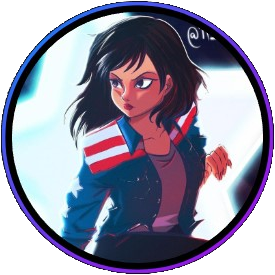

Integrantes
Fidel Velásquez Mendoza
Especialista en arreglos frutales y en el diseño innovador de composiciones frescas y naturales.
Petter Acosta Espinoza
Fundador y líder del equipo, experto en la creación de arreglos florales personalizados.

Andrea Salinas Martínez
Coordinadora de eventos y encargada de la atención al cliente, asegurando que cada cliente quede satisfecho.
Creatividad, pasión y programación...
Trabajo en Equipo.
Nos enfocamos en la Productividad de nuestros Colaboradores
Fomentamos características beneficiosas al equipo
- Trabajo en Equipo Participativo
- Crecimiento personal y colectivo
- Objetivos comunes y definidos
- Fomentar la creatividad
- Aumento la motivación
- Crecimiento en la sinergia
- Mejorar la comunicación
- Resolución de Problemas
- Organización
- Compromiso
Porque tu lo mereces
Personas felices trabajan en Petals&Fruits, colaboradores que llevan la felicidad a los clientes.¿Quieres trabajar con nosotros?
Llena el formulario de contacto indicando que en motivo que deseas unirte a nuestro equipo y recursos humanos te contactará en función de nuestras vacantes actuales.